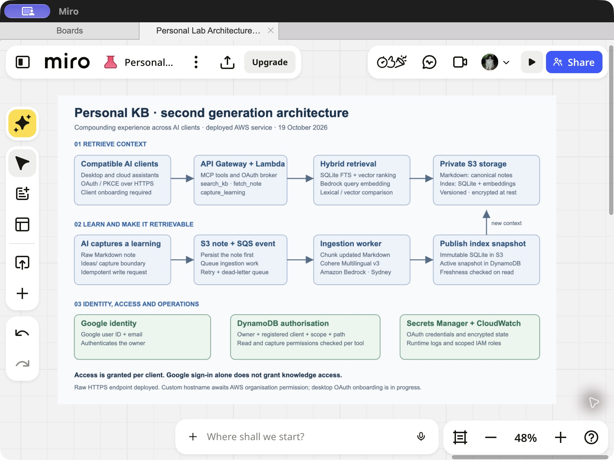
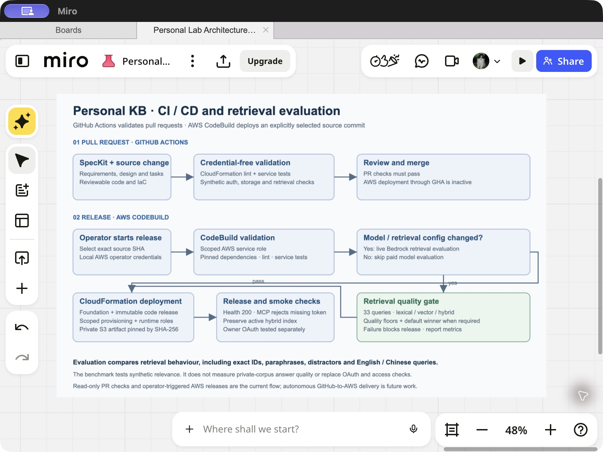

Personal project · 2026 · AI platform engineering
Your knowledge stays with you when your AI changes
I am building one authoritative knowledge base for Claude, ChatGPT and OpenClaw. MCP gives compatible assistants a shared interface to my facts, decisions and lessons, so I can change providers with less repeated briefing and keep control of the record.
Maintain knowledge once, reuse it across assistants
Native assistant memory can remain useful alongside the KB. My aim is an independent record that authorised assistants can share: what I know, why I made a decision, what happened, and what I learned. Portable Markdown keeps that knowledge usable as my preferred models and subscriptions change.
The business value is less provider lock-in, more consistent context across assistants and less work rebuilding that context. Claude, ChatGPT and OpenClaw are the intended clients; each surface still needs compatible MCP and OAuth support, onboarding and an individual access grant.
Canonical means the designated, owner-approved record. It does not make every claim infallible. MCP abstracts access; client instructions and a review workflow establish authority. Assistants should consult relevant KB evidence and flag conflicts with their own recollections for resolution.
AI captures experience; I review what becomes canonical
The operating model is retrieve → apply → observe → capture → review → reuse. Experience compounds when a reviewed lesson changes later work and its outcome is checked. More notes and embeddings alone do not demonstrate improvement.
- Start with relevant experience: retrieve previous decisions, evidence and lessons before working on a task.
- Capture the actual outcome: AI proposes a short learning with context, action, result, sources, possible applications and uncertainty.
- Review in small batches: I approve changes to canonical facts and methods. New AI-written captures remain unverified until reviewed.
- Test through reuse: a later task applies the lesson and links its outcome back, giving me evidence to keep, revise or retire it.
For example, a hypothetical deployment failure might suggest a preflight check. AI can link the incident evidence and draft the check; I review its scope before adoption. A later deployment tests whether it helped, and another assistant can retrieve the reviewed lesson without repeating the investigation.
AI can help with retrieval, capture, duplicate detection, synthesis and review preparation. Human oversight decides what becomes authoritative and whether a proposed generalisation is justified. This is the intended workflow; the deployed service provides retrieval and bounded write primitives, rather than an autonomous system that verifies and promotes lessons.
From a local Obsidian MCP to a cloud service
The first generation used an Obsidian Markdown vault, a local retrieval index and a local MCP server. Local agents could search and fetch notes through defined tools. It established that my existing notes could become usable context for AI.
It also exposed two limits. The computer hosting the MCP server had to be running, and cloud-based AI such as ChatGPT could not directly reach that local service. The usefulness of the KB depended on where an assistant ran.
The second generation moves the service boundary to AWS. Private Markdown and retrieval snapshots live in S3, and a public HTTPS MCP endpoint handles authenticated requests. Compatible desktop and cloud clients can connect through OAuth, with permissions enforced by the backend. Each client still needs to complete onboarding and receive its own access grant.
Why this matters beyond the technology
- Carry experience between tasks: lessons can become retrievable context instead of disappearing into individual conversations.
- Spend less effort rebuilding context: assistants can find relevant notes without repeated copy-and-paste or per-chat uploads.
- Reduce provider lock-in: my facts, decision rationale and reviewed lessons remain in portable Markdown as I change assistants.
- Remove the laptop dependency: the cloud service can serve authorised clients while the original computer is offline.
- Maintain one shared record: compatible, authorised clients can retrieve evidence through MCP, with proposed learning kept separate from approved knowledge.
These are the outcomes the system is designed to support. The measured evidence so far is retrieval quality on a synthetic benchmark; I have not measured a productivity improvement from everyday use.
Architecture: context in, learning back
AWS API Gateway fronts a Lambda MCP service. Google sign-in establishes identity; the backend checks the owner, registered client, scope and allowed path for each tool call. Google authentication and KB authorisation are separate decisions.
Markdown is the canonical source in a private, versioned S3 bucket, encrypted at rest. A separate private bucket holds disposable SQLite retrieval snapshots with lexical and vector indexes. Cohere Embed Multilingual v3 on Amazon Bedrock in Sydney generates document and query embeddings.
The capture_learning tool persists a raw note under the permitted Ideas/ boundary before queueing ingestion. An SQS worker chunks the note, generates embeddings and publishes an updated snapshot. This makes new learning retrievable without treating an embedding database as the source of truth.



Engineering an AI system with reviewable evidence
I used an AI-native development workflow across requirements, code, evaluation and deployment. SpecKit records the requirements, design and implementation tasks. AI-assisted changes are reviewed against those artefacts, explicit tool contracts and executable checks.
There are several different questions to answer: does the code work, does access control hold, can retrieval find the right note, and can the system be deployed repeatably? Service tests exercise HTTP and Lambda behaviour, storage and authorisation. Retrieval evaluation measures ranking quality. CloudFormation and a pinned release pipeline make infrastructure and application changes reviewable.
That combination matters because a successful tool call alone says little about whether the assistant found the right context or respected the intended access boundary.
Evaluate retrieval before choosing a default
I compared lexical, pure vector and hybrid retrieval rather than assuming that hybrid must be best. An early 14-query fixture favoured pure vector on top-one accuracy. I expanded the evaluation before choosing the default: 20 synthetic notes and 33 judged queries, including paraphrases, similar notes with different answers, exact identifiers and English/Chinese cross-language retrieval.
| Strategy | Expected note ranked first | Expected note in top three |
|---|---|---|
| Hybrid | 29 / 33 | 33 / 33 |
| Pure vector | 28 / 33 | 33 / 33 |
Hybrid also reached 7/7 exact-identifier top one and 6/6 cross-language top three. Those results support hybrid as the current default on this fixture. They do not establish that it is best for every corpus or query.
The evaluation uses synthetic content. It checks the embedding model together with chunking, indexing and ranking; it does not isolate embedding quality, measure generated answer quality, or prove relevance on my private notes. An owner-judged question set from regular use is the next step.
CI/CD: quality gates at the right stage
GitHub Actions runs credential-free infrastructure validation and synthetic service checks on pull requests. The current AWS release path is an on-demand CodeBuild job started at an explicitly selected source commit. CodeBuild uses its scoped AWS service role to package and deploy through CloudFormation.
The live Bedrock retrieval benchmark is mandatory when the pinned embedding model or retrieval configuration changes. Unrelated changes still run the normal validation and service tests, while avoiding a paid model benchmark on every deployment. A failing required quality gate blocks the release.



After deployment, health and unauthenticated rejection checks confirm basic service behaviour. An authenticated client still needs an OAuth and permission acceptance check. Those checks answer different questions from the retrieval benchmark.
Current status and next evidence
The cloud service, private S3 note copy and full hybrid index are deployed at the raw API Gateway endpoint. The desktop OAuth callback rejection has been fixed and deployed; registration now reaches authorisation. Completing client sign-in and verifying its KB permissions remain separate onboarding steps.
The certificate for mcp.midu.com.au is issued. API Gateway custom-domain creation remains blocked by an AWS organisation permission, so the custom hostname is not live yet.
The next evidence should come from everyday use: owner-judged retrieval questions, cross-client consistency, time spent rebuilding context, and whether reviewed lessons help with later tasks. Track reuse, corrections and repeated mistakes alongside freshness, latency and client access. Those checks will show whether the knowledge loop is actually compounding useful experience.